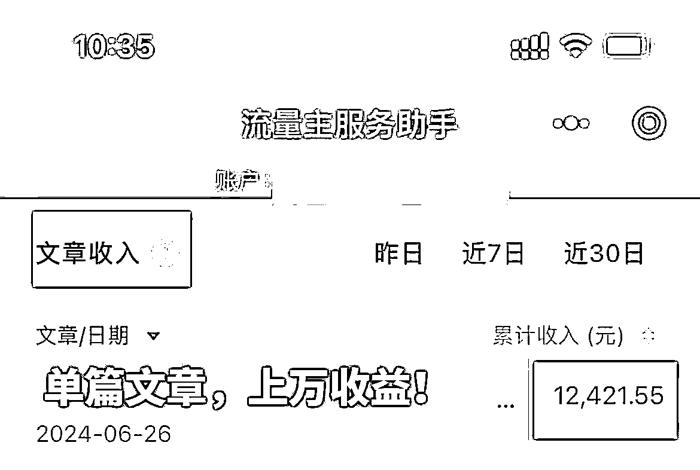

来源：https://die28mmde0k.feishu.cn/docx/ZnW5dcJRmoo7TAxJkKecLQDvnpJ
嗨，你好，我是安七。应届毕业生，1年双百万。
昨天刚打开生财，发现文章被标精华了，我想，哇，是时候要写下这篇万字复盘文了，一个新的里程碑。
精华文在这里：https://t.zsxq.com/GjvBy
跟之前写过的帖子都不一样，这篇文章，我想写下我在生财完整的成长经历，写下我是如何从小白一步步到拿到结果、精华的
希望能帮到在生财找项目、没有方向、结果暂未放大的伙伴，能够从中透过“我”看到“你”。
为方便大家阅读，我把文章大概分成4部分：
1/懵懂——把生财当做一本搞钱字典
2/遇挫——被骗上万，觉醒搞钱意识，疯狂找项目
3/小白——遇贵人，定基调，生财航海，跑通最小MVP
4/深入——结果放大，官方赋能，
关键词：无头苍蝇，不甘心，搞钱字典
第一次感觉自己是只无头苍蝇，是在读大学的时候，大一。
当初刚进大学校园的时候，是我爸陪我去的。
踏入校园的那一刻，我爸就跟我说：“你要考研，知不知道？考研，然后找份好工作，这样才有出息。”
那个时候的我非常坚定，甚至已经做好了大学4年规划：
“大一的时候，参加各种社团、活动，认识人脉；
大二的时候，开始好好读书；
大三的时候，准备考研，花时间备考；
大四的时候，如果考研成功，就去读研……”
好像一定要给自己的人生定基调，我才能安心的走下去。
但是走着走着，我发现不对劲了——怎么越来越迷茫？
好像周围的人也没有很努力，他们不担心吗？
考研到底是不是我想要的？
很多问题，都没有答案。越模糊，越焦虑。
刚遇到生财的时候，我还是一个普通大学生，有幸获得明白老师赠送的门票，才能入场。
不过当时满脑子都是个人成长，没有生存压力，没有搞钱动力，所以只是把它当做一本搞钱词典——
在自己实干之前，我其实并没有意识到生财的价值，只听说它是国内副业搞钱社群TOP，里面有很多的搞钱项目，也有很多人在里面逆袭。
除此之外，再无其他了解和深入。
更多时候，我只是看，静静地看着大家“发现项目——实践项目——复盘项目——惊讶与羡慕”，真的很心动了，就收藏一波，以备不时之需。
很悲伤的是，我突然发现，自己在的18线小城市的双非二本学校，资源是这么的匮乏！
我不甘心，好不容易通过读书这个渠道，从山旮旯里面走出来，是家里第一个大学生，难道就要这样了吗？
人生的“可预见性”让我一度觉得非常不甘，所以又是各种折腾。（不过当时的折腾都是偏个人成长类的，还没有搞钱的意识和想法。）
当时还因为这份不甘心，所以大一的时候就花了上万块出去学习，想打开人生更多可能性。
总结起来，这个阶段其实是：
一个有点想法，但不懂搞钱、搞钱行动为0的懵懂大学生。
人不经事，不成长。
我之前的重心一直是“个人成长”方面，加上赚钱这事，老师不教，父母不会，
所以我当初本能的觉得，我应该要先找个人生方向，赚钱是后面才要考虑的。（其实非也，赚钱大补）
直到，我遇到了很大的挫折，四下张望发现没有人能帮到我时，才觉醒搞钱意识。
我记得很清楚，2022年12月12日，有够2的，我被骗了2万多！
那个时候在搞一个所谓的项目，其实就是zj盘，投钱然后赚多少之类，第一次接触，没想到就被坑了两万多。
两万多块啊，那是我一个普通家庭出来的孩子、一大三学生熬了好久时间，真的是纯工资、一份时间赚一份钱，一点一点赚、一点一点省出来的。
是我当时全部的身家性命。但是也怨不得，因为自己贪+非常无知。
当时这件事对我的冲击和打击力度还是非常大的，本来傍着自己身上这几个W，打算毕业缓冲一下，然后旅旅游啊之类的，一夜之间，化为乌有。
这个时候，我才开始真正的、疯狂的想赚钱、赚到钱！
就像，要在绝望中找到一根救命稻草，去拯救自己，让自己看到希望。
而生财，是后来在我看了、知识付费了N个产品和社群后，筛选出的最有可能让我先拿到结果、救自己于水火之中的希望。
说来惭愧，这里得对生财说声抱歉，早两年还是学生党，很学生思维，也听到很多“教你赚钱的都是想赚你钱的”之类的说法，没有什么辨别力，
加上生财积累的项目帖很多，资源太多，刚进来的时候手足无措，我一开始对生财是戴了“有色眼镜”的：
当时整天整天的刷手机，小红书、抖音、视频号等都搜“搞钱”“副业赚钱”等的。
去看，去研究，但是发现这些公域平台上的内容，大多华而不实，很多都是引流产品。
我以为生财跟他们都一样，浮于表面、只可远观而不可亵玩
但后来发现，生财和他们不一样。
至少，在这里我能：
①精华：看到一个完整的项目复盘，不会断章取义。（“偷师”必备）
②航海：在航海手册上，有很多看了就能用的东西，详细程度不亚于市面上几千上万的知识付费课。（谁用谁知道，真的好）
③资源对接：找到各种各样的资源（比如我想开店，在生财搜有关信息）
④线下见面：跟人真实的线下见面，比纯聊天要可靠（去年跟一位B端客户成功签协议，原因是：在同一个圈子+线下见过）
⑤链接贵人：对我来说，这个价值和意义巨大
……
当然，这些是后话。
第5点，就是我发生巨大改变和收获超大的一个点。
因为在生财遇到了贵人，我才能避免损失至少20W、找到正确的方向、拿到小结果、在商业模式的加持下拿到大结果、被生财官方看到有更多赋能……
走错一小步，人生一大步。现在想来其实很后怕！
被骗了后，当时整天整天的emo，把自己关在房子里，不知道做什么。
除了美食，可能还会让我有点兴趣，愿意出去走动走动。
再平常不过的某一天，我忽然想念大学时期的黄焖鸡了，出门想吃黄焖鸡/重庆鸡公煲，结果发现没有一家有关“鸡”的店，而且是全县都没有！
于是，我意外萌生了一个想法：要不然在这里，开一家黄焖鸡的店？这样我就能吃到了。
都说一个人的起心动念很重要，起了这个心动了这个念后，这个想法就在我脑海中挥之不去。
想了很久，决定试试。
很神奇，我一个从来没有创过业的人，第一次有创业的想法，居然马上想到的是餐饮。
各种搜索，还找到了一家山东线下的加盟商，打算过去考察。
当时还算了笔账：
我手里面是没什么钱了，但是大学理财账户里面还有些救命钱，我的加上男朋友的，杂七杂八加起来，最多有3-5W。
加盟费就是好几个W，租金、装修、水电……可能搞下来，至少要10多20个W。
但哪怕是这样，我也执拗的想过去看下，想尝试下“餐饮神话”（普通人做，基本不太可能）
也许是冥冥之中吧，在决定去考察的前一两天，我突发奇想——要不然在生财上搜一下，没准有相关帖子呢？
万幸，在做决策之前，还有点【搜商】。
就这样，我找到了我们天使投资人张哥@ 张昭 的精华帖，一路顺藤摸瓜，加到了张哥微信。
张哥精华帖：https://articles.zsxq.com/id_bltwvh06nork.html
加到张哥微信后，我的初心是想向他请教，纯小白，想开家黄焖鸡的店这个想法是否可行？
后来没想到，误打误撞聊着聊着，意外被张哥挖掘了一点有可能的亮点，他说：
“这样，你们两个小朋友过来一趟，我看下，如果可以，你们俩就在我身边做点事……”
就这样，我们并没有踏上去山东的高铁，而是来了广州。
又很幸运的是，在本来“得罪”了张哥的情况下，我们第2天还能跟哥见面，并且听劝了——不建议我们俩做餐饮创业。
（具体原因，我在之前这篇帖子当中详细讲了，就不再赘述啦
可以看下： ）
听劝是个很重要的能力。
如果当初我们俩没有听张哥的，一意孤行觉得餐饮可行、就是要去干、“生怕别人拦着我赚钱”，那肯定不会有现在的我。
如果做了这件事，我真的，不知道在哪个角落里哭……
遇到张哥、来广州见到他、听劝没开店，无形之中，命运的齿轮开始转动。
其实我在做公众号爆文之前，也看了好多项目、也尝试了几个项目
比如我尝试过问一问，当时生财有关于问一问的【异常值】，我觉得可以做，
就开了个训练营，也招了一些学员，赚了点小钱，
还有做过视频号，
当时看生财的风向标，发现一个【异常值】，说某种形式的视频容易爆，所以我就做了，第二天就出了10W+的视频。
那几天每次打开都是999+的小红点，很开心啊，但是也没有特别大感觉，因为我不知道怎么变现，或者，我只是玩，没有想过要在这个上面去下功夫
但值得一提的是，生财的“风向标”里面，是蕴含了很多机会的。
至少我尝试的几次，真正去实践，还是取得了结果滴。
亦仁老师说过，赚到100W，信息差+超强执行力是两个关键因素。
生财的信息差，太多了。
去年6月份忙完毕业，7月份刷生财看到公众号爆文的【异常值】，开始测试。
我记得很清楚，7.14开始写，7.16开通流量主，写了半个月，没有一点起色。
甚至我已经跟朋友说，打算把号还给她不测了，结果第2天，阅读量突然以每秒钟几十上百的速度往上涨！
也赚到了躺着就赚到的141块钱！
那时候觉得超开心，也开始意识到这件事是可行的，用结果打破了自己脑海中“公众号是不是不行了”的刻板印象。
觉得自己跑的差不多了，正好又碰上生财8月航海开启。
为了验证自己的是否可行，于是报名航海跟大家一起跑，通过航海手册又挖掘了好多细节。
这些细节、经验都为后面我自己开课做了铺垫，所以我说，生财的航海手册不亚于市面上的课程，这是小“同行”的肯定hh。
我是幸运的，在张哥有打算做投资孵化之际，出现在他眼前。
亦仁老师说，生财未来几年是“00后的”，张哥也赞成这个点，所以年龄上我也占了一波红利。
但去年的时候，其实非常战战兢兢。
万事开头难，好不容易找到了个方向，开了头，但是接下来的路怎么走？一片茫然。
“年轻时有个领路人，也许人生会不一样”
四顾茫然，通过生财链接到张哥，已经是我很幸运的一件事了。
为了能够成功抱上大腿，去年9月份，在自己做出来一点成绩后，我终于有勇气拿公司协议找到张哥：
“哥，我们合作吧”
分享几个，我链接贵人、得到孵化的“好运秘籍”
今年6.15，坤汀哥带队航海家来广州游学，请张哥分享。
张哥说：“你们4个小朋友，准备下，也分享各自做项目的经历”
哇，那一刻感觉世界明媚。
615那天，坤汀哥圆桌会议上问了我们几个一些问题，这是我第一次接受访谈，好在成功通关~
这是第一次接触航海家群体，看到大家都取得了各自领域比较大的结果，身家百万千万甚至更高
那个时候，我暗暗发誓：一定要争取，早日进入航海家队列！
从0到1，我已经成功跑完，1-10也跑好了，接下来，就是要进入航海家，实现10-100、1000啦。
从去年做公众号爆文到现在，我一直在做公众号爆文项目，也很庆幸这个举动。
晓文老师在直播连麦过程中，问我：“听说公众号没有之前好做了，你为什么还会选择做？是否有摇摆过？”
哈哈，一针见血。
实话实说，我也摇摆过。
和很多做公众号爆文的伙伴一样，我也听说了类似“公众号爆文不行了”之类的说法
虽然能每个月稳定有5-6位数的流量主收益，但前两个月的时候，我也会觉得有些恐慌。
也在看，生财里面还有没有其他跟文字有关、可以通过AI赋能的项目？（现在生财已经成为了我最常看、TOP1的星球了）
当时刷到代写还不错，心里面有些痒。
我这人没太多优点，其中一个就是知道自己缺点有哪些。自知战略能力不行，所以战略大方向上的，我都听张哥的。
于是跟张哥商量：“哥，我要不要换方向？”
张哥马上否定了我的这个想法——
“你好不容易找到方向，花几个月时间跑，验证模型是可行的，还取得了一些结果
为什么要放弃你已有的、现在还可以做的基本盘，去重新搭个盘？
又要花几个月时间去摸索和尝试，且不说有没有结果，你的这个盘，还要不要了……”
好吧，成功掐灭动摇的小火花。
事实证明，张哥说的很对，因为——在接下来的一两个月，我手里的号又爆了，而且单篇收益上万！

还有很重要的一个点是：
如果我当时选择放弃公众号爆文，没有持续做，就等不到晓文老师邀请我分享公众号爆文这个主题的内容。
哪怕能讲，能分享，也不科学和客观—— 一个都没有在做这个项目的人，来分享怎么做这个项目？emm
自那次请教张哥是否要继续做爆文项目，被否了后，我就安心继续把这个基本盘做好。
坚定继续要做公众号爆文这个信念，可以说有这3个方面的原因：
去年9.18，我意识到自己的力量太小，所以拿着公司协议跑到张哥办公室，申请和他合作。
张哥没有多说，只说：“跟我合作，很简单，听话照做狠执行。
要么，都听我的；要么，别听别干，不用开始。”
可以说，张哥就是我的“最高指挥官”，他指哪我打哪。
超强战略眼光+不打折扣的执行力，结果一定不会差。
合作快1年，我取得的结果已经是过往的N倍了。
实践告诉我，要听高手的。
“如果你的判断标准是对的，为什么结果又是不对的呢”
躬身入局，发现这个项目还是能做，仍旧有空间。
公众号爆文是生财诸多航海中，一直保留的。
官方释放的这么好的信号，可不能错过。
非常感恩生财，愿意给我们普通草根赋能——
如果你真的跑通某个项目，且拿到还不错的结果，愿意真心实意分享、足够利他、实操性不错，官方会留意到，有可能邀请你做分享，甚至文章标精华。
在万人社群曝光，在千人直播间互动带来的曝光和影响力，真的喜人！这可能是外面很多付费上万的合伙人产品都不一定有的效果……
从2022年4月加入生财，到现在已经有2年多时间。
这2年多发生的事，恍如隔世。
从一个单纯、不谙世事、一心付费成长学习的大学生，
变成毕业即创业、误打误撞链接贵人、误打误撞把公众号爆文项目做成的一人公司CEO，感觉这一切都像做梦一样。
按照我原来的人生轨迹发展路线，我大概是会走向“高级打工人”路线，然后可能30+左右忽然醒悟，又又开始折腾（一如我大学）……
是生财，让我一个非常普通的双非二本生看到希望、发生改变、取得结果、持续创造！
这里，一定要再次感恩生财、感谢亦仁老师！一张2000+￥的门票，甚至可以改写一个普通人的一生！
还有，感谢、感激、感恩天使投资人&人生大贵人 @张昭 @甜姐（很低调的姐姐，昵称搜不到哦）
张哥在我心目中是“活着的丁元英”，很神奇的大佬。
（如果你没有看过《遥远的救世主》，建议可以去看一下这本书，丁元英是其中的主人公。这本书，浓缩了N多人生、商业、社会阶层……的精华。）
还有还有，要感谢所有生财官方人员，坤汀哥、子安、秀儿、鱼丸、怀民老师、晓文老师等等……
生财生态越来越好，离不开各位老师的默默奉献和支持，管理这么多人、筛选这么多项目、处理这么多琐事，真心不易，感谢！
最后，感谢看到这里的圈友，谢谢你很耐心看到了这里~
和大家分享，张哥在朋友圈分享的两句话，一语中的戳中了我前面的人生轨迹，共勉~
我们，一起生财！